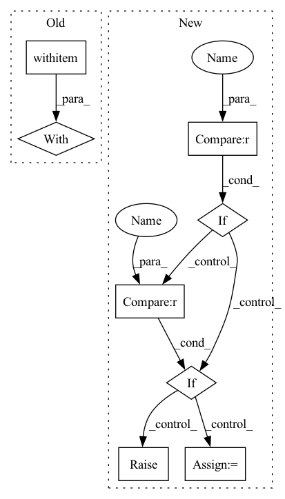

Pattern ID :6023
Before Change
output_examples.split_names = artifact_utils.encode_split_names(
sorted(example_uris.keys()))
with self ._make_beam_pipeline() as pipeline:
for split, example_uri in example_uris.items():
output_examples_split_uri = artifact_utils.get_split_uri(
[output_examples], split)
inferrer_step.set_output_uri(output_examples_split_uri)After Change
output_examples = artifact_utils.get_single_instance(
output_dict[PREDICTIONS])
if EXAMPLES not in input_dict :
raise ValueError("\"examples\" is missing in input dict.")
if MODEL not in input_dict :
raise ValueError("Input models are not valid, model "
"need to be specified.")
if MODEL_BLESSING in input_dict:
model_blessing = artifact_utils.get_single_instance(
input_dict["model_blessing"])
if not model_utils.is_model_blessed(model_blessing):
logging.info("Model on %s was not blessed", model_blessing.uri)In pattern: SUPERPATTERN
Frequency: 3
Non-data size: 8
Instances Fragment ID: 21019523
Project Name: maiot-io/zenml
Commit Name: 1f86eb5ae94e0dc71caf2edadd7a41f84a41fa35
Time: 2021-03-18
Author: bariscandurak@hotmail.com
File Name: zenml/components/bulk_inferrer/executor.py
M Class Name: BulkInferrerExecutor
N Class Name: BulkInferrerExecutor
M Method Name: Do(4)
N Method Name: Do(4)
M Parent Class: base_executor.BaseExecutor
N Parent Class: base_executor.BaseExecutor
M File Name: zenml/components/bulk_inferrer/executor.py
N File Name: zenml/components/bulk_inferrer/executor.py
M Start Line: 49
M End Line: 101
N Start Line: 63
N End Line: 111
Before Change
>>> losses = tlx.losses.normalized_mean_square_error(y_logits, y_target_logits)
with tf .name_scope("normalized_mean_squared_error_loss"):
// if len(output.shape) == 2: // [batch_size, n_feature]
// axis = 1
// elif len(output.shape) == 3: // [batch_size, w, h]
// axis = [1, 2]
// elif len(output.shape) == 4: // [batch_size, w, h, c]
// axis = [1, 2, 3]
nmse_a = tf.sqrt(tf.reduce_sum(tf.math.squared_difference(output, target), axis=axis))
nmse_b = tf.sqrt(tf.reduce_sum(tf.square(target), axis=axis))
nmse = tf.reduce_mean(nmse_a / nmse_b, name=name)
return nmseAfter Change
nmse_a = tf.sqrt(tf.reduce_sum(tf.math.squared_difference(output, target), axis=-1))
nmse_b = tf.sqrt(tf.reduce_sum(tf.square(target), axis=-1))
if reduction == "mean" :
nmse = tf.reduce_mean(nmse_a / nmse_b)
elif reduction == "sum":
nmse = tf.reduce_sum(nmse_a / nmse_b)
elif reduction == "none" :
nmse = nmse_a / nmse_b
else:
raise Exception("The reduction values are "mean", "sum", and "none".")
return nmse
Fragment ID: 21019527
Project Name: tensorlayer/tensorlayerx
Commit Name: 21bf2328ccadff5a24520c774d17bfd6d5e05fa4
Time: 2022-01-26
Author: laicheng_vip@163.com
File Name: tensorlayerx/losses/tensorflow_cost.py
M Class Name: AnonimousClass
N Class Name: AnonimousClass
M Method Name: normalized_mean_square_error(3)
N Method Name: normalized_mean_square_error(4)
M Parent Class:
N Parent Class:
M File Name: tensorlayerx/losses/tensorflow_cost.py
N File Name: tensorlayerx/losses/tensorflow_cost.py
M Start Line: 168
M End Line: 198
N Start Line: 198
N End Line: 209
Before Change
def process(self, audio_path):
// start = timeit.default_timer()
with torch .no_grad():
if isinstance(audio_path, str):
audio, _ = librosa.load(audio_path, sr=self.sample_rate) // reading the data
else:
audio = audio_pathAfter Change
def process(self, audio_path, inference_model, plot = False):
if inference_model == "PF" : // instantiating a Particle Filter decoder - Is Chosen for online inference
self.estimator = particle_filter_cascade(beats_per_bar=[], fps=50, plot=plot)
elif inference_model == "DBN" : // instantiating an HMM decoder - Is chosen for offline inference
self.estimator = DBNDownBeatTrackingProcessor(beats_per_bar=[2, 3, 4], fps=50)
else:
raise RuntimeError("inference_model can be either "PF" or "DBN"")
preds = self.activation_extractor(audio_path)
if inference_model == "PF": // Online _ causal
data = self.estimator.process(preds) Fragment ID: 21019543
Project Name: mjhydri/beatnet
Commit Name: 0fb33177b8fcafe2daff996b597bcb04eeb71a15
Time: 2021-10-29
Author: mj.hydri@gmail.com
File Name: src/BeatNet/BeatNet.py
M Class Name: BeatNet
N Class Name: BeatNet
M Method Name: process(4)
N Method Name: process(2)
M Parent Class:
N Parent Class:
M File Name: src/BeatNet/BeatNet.py
N File Name: src/BeatNet/BeatNet.py
M Start Line: 47
M End Line: 71
N Start Line: 39
N End Line: 51